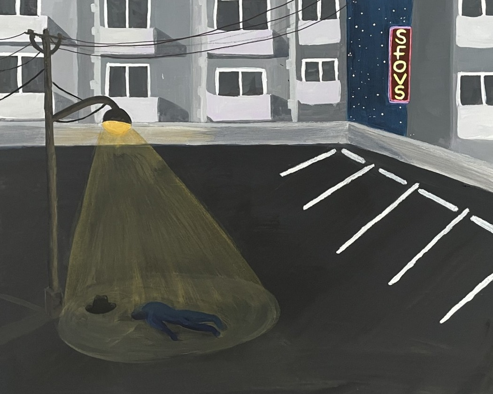
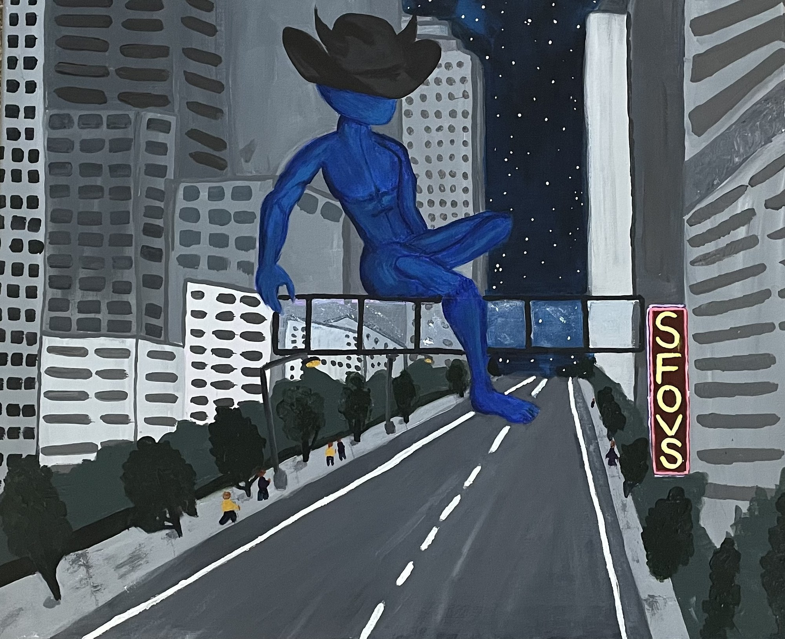
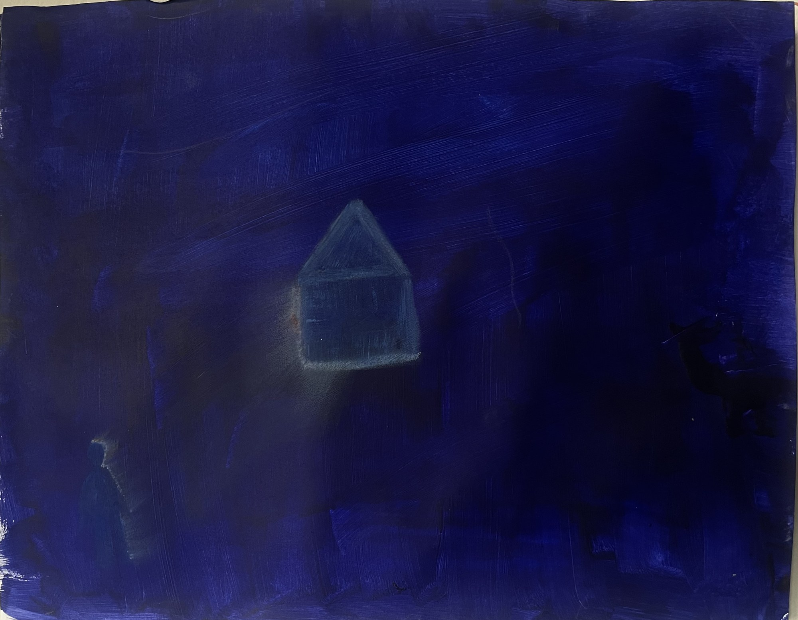
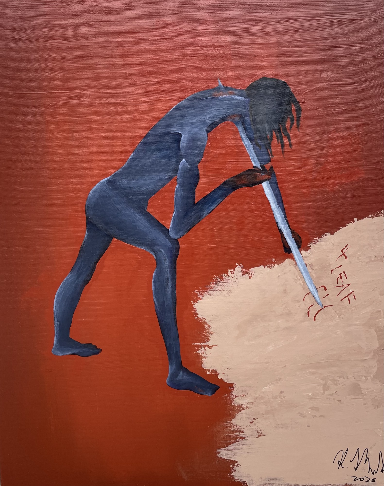
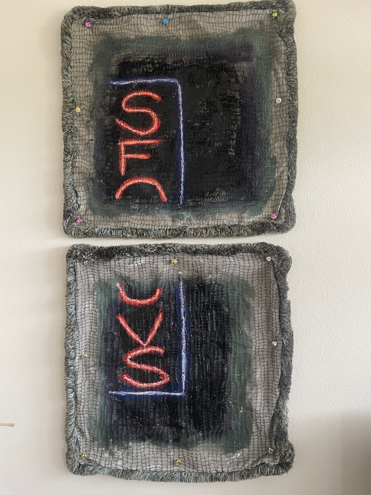
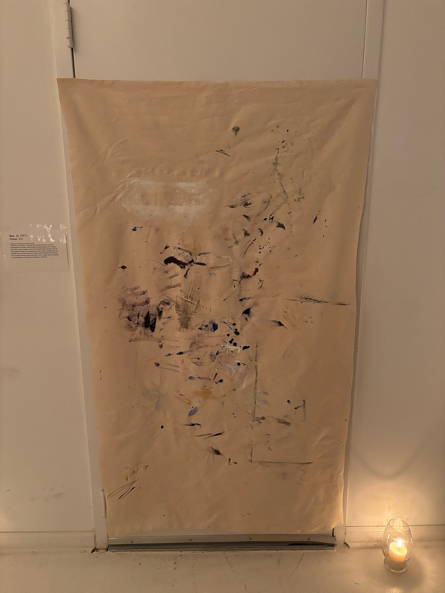
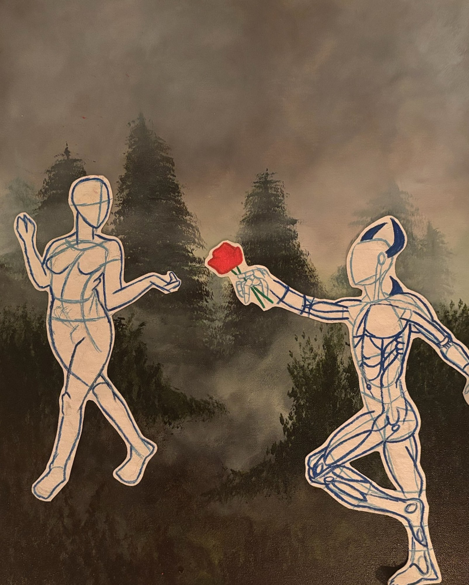
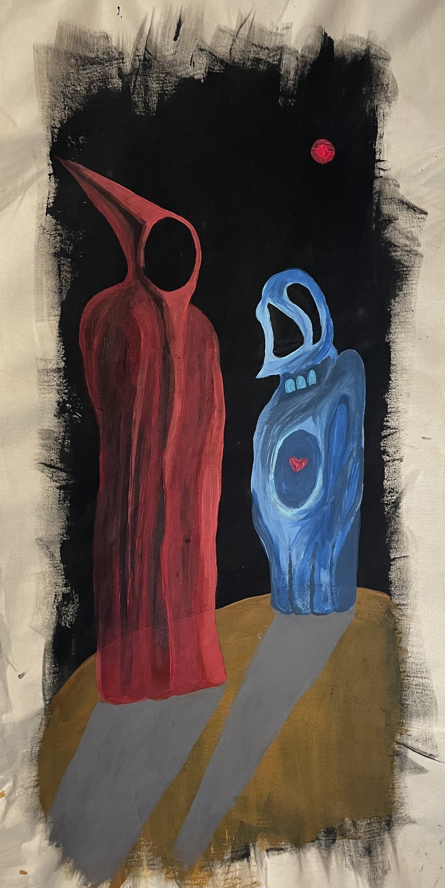
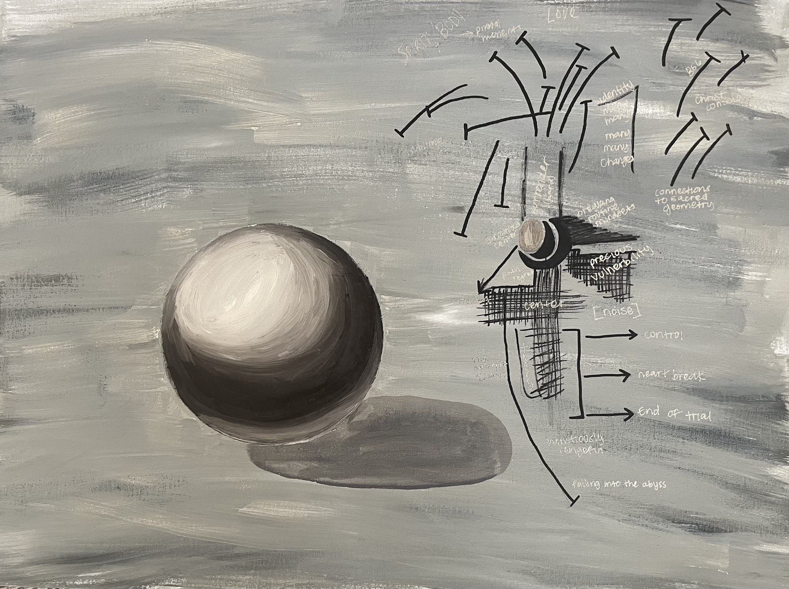

First Night On The Rooftop · 2025
Acrylic on canvas
Paintings, multimedia, and visual worlds from Keo’s independent practice.

Acrylic on canvas

Acrylic on canvas

Acrylic and oil pastels on canvas

Acrylic on canvas

Acrylic and oil pastels on pillowcase

Acrylic on duck cotton

Acrylic on canvas

Acrylic on duck cotton fabric

Acrylic on canvas
Screenplay for an animated short film
Try another category or clear your search to see more works.
Keo renders a lone figure in blue beneath a streetlight, the body flattened against an empty parking lot. Acrylic is applied in deliberate layers: muted tones for the pavement and buildings, sharper edges for the neon sign that continues its cycle overhead. The composition holds a single moment of stillness, the figure positioned in a way that suggests pause rather than motion. By isolating form against urban infrastructure, the work gestures toward vulnerability and exposure without dramatizing it.
Working from an elevated perspective, Keo revisits the scene from First Night on the Rooftop with a shift in vantage point. The buildings, road, and trees are constructed in flat greys, while the blue figure is rendered as a single uninterrupted shape that floats across the surface. The skewed perspective and stacked windows turn the composition into something closer to a diagram, a way of organizing memory through spatial logic. Here, the artist showcases how something can now be studied, edited, and re-entered with sharper confidence.
A dark blue figure bends forward against a rust-red field, arm extended into a thick patch of layered, dragged acrylic. The pale “soil” is built through repeated gestures, left rough and unresolved. Keo uses the physical weight of paint to anchor abstraction, letting the surface carry what language might struggle to hold. Cloud To Soil comes from taking old, heavy experiences and refusing to leave them floating in your head. Here they’re dragged down into the ground instead — pressed into a place where they can act like compost, feeding whatever decides to grow next.
Working from a found photograph, Keo reduces the scene to its essential elements: a field, a deep blue sky, and a single glowing blue house in the distance. The house is blocked in with acrylic, then built up with oil pastel until the color pushes past natural, reading more as signal than structure. A small figure stands back and observes. The work folds looking into considering, watching a life lit up across the grass before deciding what comes next.
By painting directly onto pillowcases, Keo transforms functional objects into surfaces for memory and intimacy. The red letters emerge through layered acrylic and oil pastel, their glow recalling signage but subdued by the fabric’s domestic softness. Here, the artist uses materials and text to evoke a threshold moment — one where unfamiliarity quietly settles into something closer.
Laid flat in the studio for months, this unstretched duck cotton has accumulated test marks, wiped brushes, dropped pastels, and overspray from other works. Angles of color stop abruptly where canvases once sat, leaving ghost borders and overlapping sweeps of paint. Nothing here was planned, but every layer records a decision made elsewhere in the studio. Keo reframes the drop cloth as the main event, a single surface that holds the accumulation and rhythm of building an exhibition.
Two outline figures stand against a misted forest, rendered as blue contour drawings atop a softly painted ground. One offers a red rose; the other appears mid-step, hand raised, uncommitted. The composition holds the pair in a moment of proposition and hesitation — bodies drawn in the vocabulary of anatomical study, as if the relationship itself is still being diagrammed.
On the left, a sphere sits carefully shaded against a muted, cloudy ground. On the right, that same sphere is pulled apart into a chart of arrows, notes, and pathways. Keo treats the process of understanding as a visual problem: beginning with something simple and solid, then overworking it into a diagram of possible outcomes. The split composition mirrors the way introspection can become recursive, mapping and remapping until the original form is nearly obscured.
Painted onto unstretched duck cotton, two cloaked forms occupy a small patch of ground within a rough black window cut from the raw fabric. One figure is tall and red with a sharp, beak-like hood; the other is smaller and blue, with a heart visible through its chest. Their shadows lean toward each other beneath a distant red moon. By working directly on fabric and leaving the edges unfinished, Keo collapses the boundary between object and image, letting the material itself become part of the exchange between protection and exposure.
An animated short film script, staged in the exhibition as a printed object with candles and a single rose. The full text is preserved with the exhibition documentation.
This is a screenplay, not a completed film. Read the preserved screenplay in the exhibition documentation →
Keo · The Museum of Brilliance